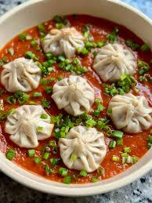
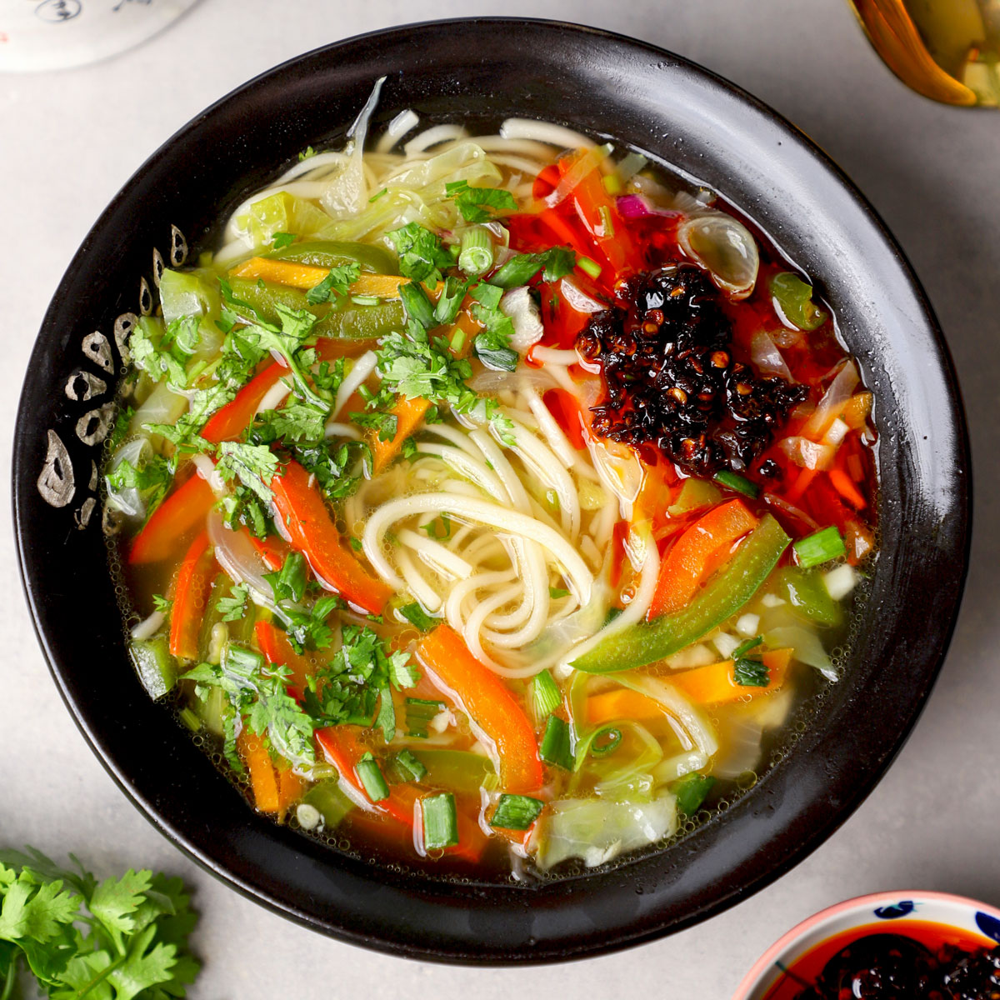
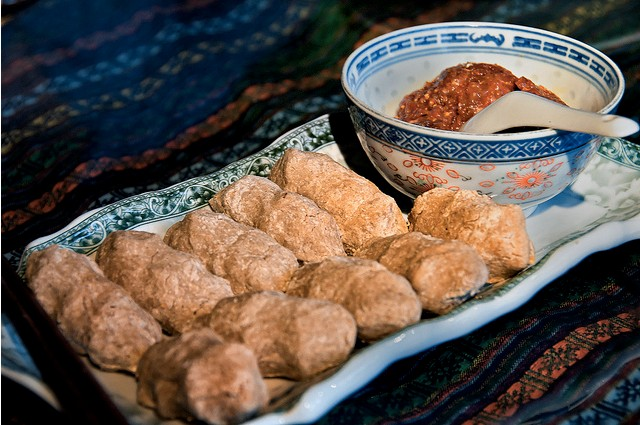
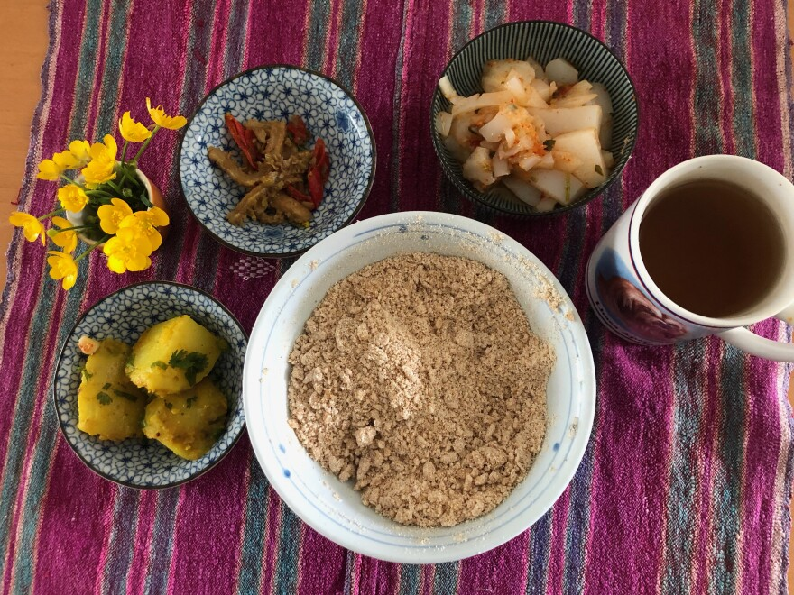

Momo is one of the most popular Tibetan dishes, known for its delicious taste and cultural significance. These steamed or fried dumplings are typically filled with minced meat or vegetables and served with spicy sauce. Beyond being a comfort food, momo represents family and community, as people often gather to make and share them together. Its warm, flavorful nature reflects Tibetan hospitality and tradition.

2.Thukpa
Thukpa is a traditional Tibetan noodle soup cherished for its warmth and nourishment. Made with hand-pulled noodles, meat, vegetables, and aromatic spices, it provides comfort in Tibet’s cold climate. Beyond its rich flavor, thukpa reflects Tibetan hospitality and the importance of sharing food with others. It symbolizes warmth, health, and the deep-rooted connection between people and their environment.

3.Tsampa
Tsampa is the staple food of Tibet, made from roasted barley flour often mixed with butter tea or water. Simple yet highly nutritious, it provides energy and warmth for life in the high mountains. More than just food, tsampa symbolizes Tibetan identity, resilience, and self-reliance, representing a deep connection to the land and traditional way of life.


4.Butter Tea
Butter tea (Po Cha) is a traditional Tibetan drink made from tea leaves, yak butter, and salt. Rich and salty in flavor, it provides warmth and energy in Tibet’s cold, high-altitude climate. More than a beverage, butter tea reflects Tibetan hospitality and culture, often served to guests as a sign of respect and welcome. It embodies comfort, strength, and the spirit of Tibetan daily life.